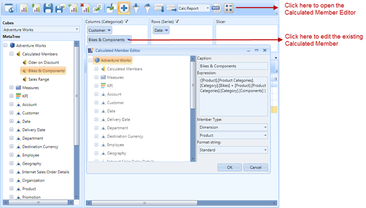

This feature allows users to enable/disable, create, and edit the calculated members on the fly in the current OLAP report or current view of the OlapClient control. Using this feature, users can define measures and members as they wish using the Calculated Member Editor (as shown in the following image). The Calculated Member Editor dialog can be opened by clicking the button available in the toolbar of the OlapClient control.

Figure 77: OlapClient with Calculated Member Editor
 Use Case Scenarios
Use Case Scenarios